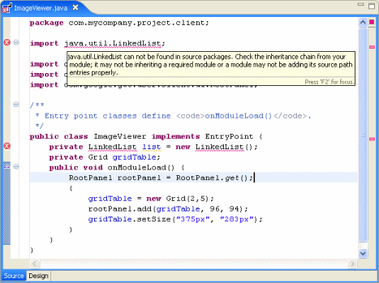
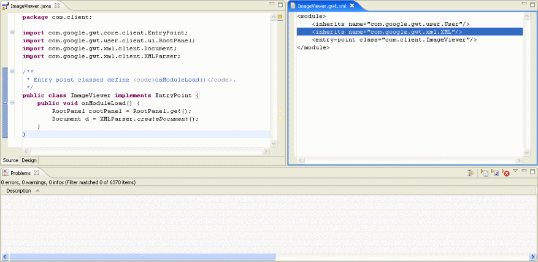
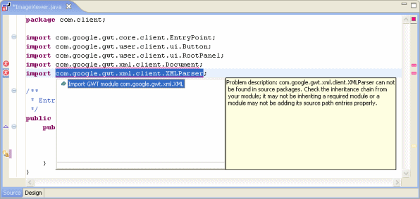
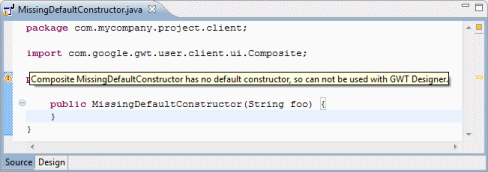

GWT Designer adds a compilation helper that checks compilation
units during build (full or incremental) for GWT-specific
problems. The compilation helper checks all types referenced in
the class to make sure that each type exists directly in the
current GWT module or in any of the modules that are directly or
indirectly included in current one (via <inherits> tags
in the gwt.xml file). If a type does not exist, GWT
Designer adds an error marker like the following:
Note that only referenced types are checked; not referenced
methods. |
|
Compiler checks for types emulated by GWT. Referenced types
(like java.util.LinkedList) that are not emulated are
flagged with an error.
 |
|
Compiler checks for referenced types that are not properly
inherited via the gwt.xml file. For example:
 |
|
A QuickFix is available for adding <inherits name="module.name"/>
 |
|
Compiler adds a warning for
Composites
without a default constructor. Custom widgets and Composites must have a default constructor in order to be used within GWT Designer.
 |
Code that is inappropriate for
design time may be hidden with isDesignTime() checks.
Remote Services are runtime-only components and care must be taken when trying to use them at design time in a Composite class. GWT.create(MyService.class) needs to create an instance of the class that should invoke the RemoteService implementation on the application server. During design time the application server isn't running so this doesn't work. That means that code like the following will fail, if you try to use the custom Composite within another window at design time:
At design time, you will see an exception like the following:
The fix is to wrapper the RemoteService instantiation reference in an isDesignTime() check like this:
Make sure to also implement the isDesignTime() method exactly as shown. Return false for GWT 2.2 or earlier or Beans.isDesignTime() for GWT 2.4 and above. At design time, GWT Designer will then replace the "return false;" with "return true;" during class loading (it will compile normally and be ignored at runtime). |